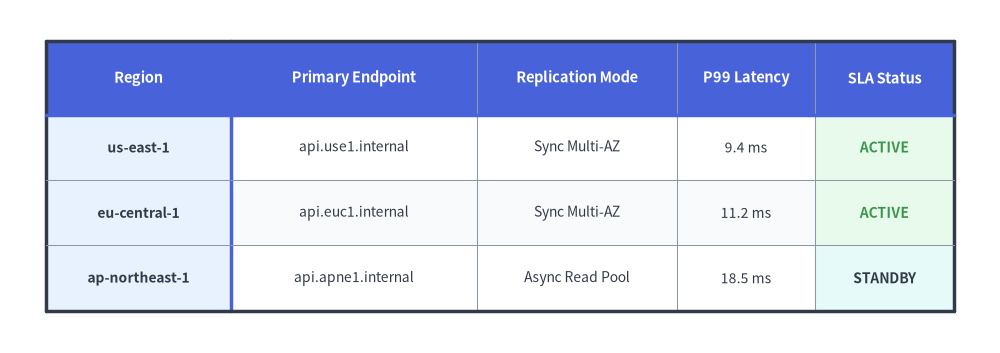
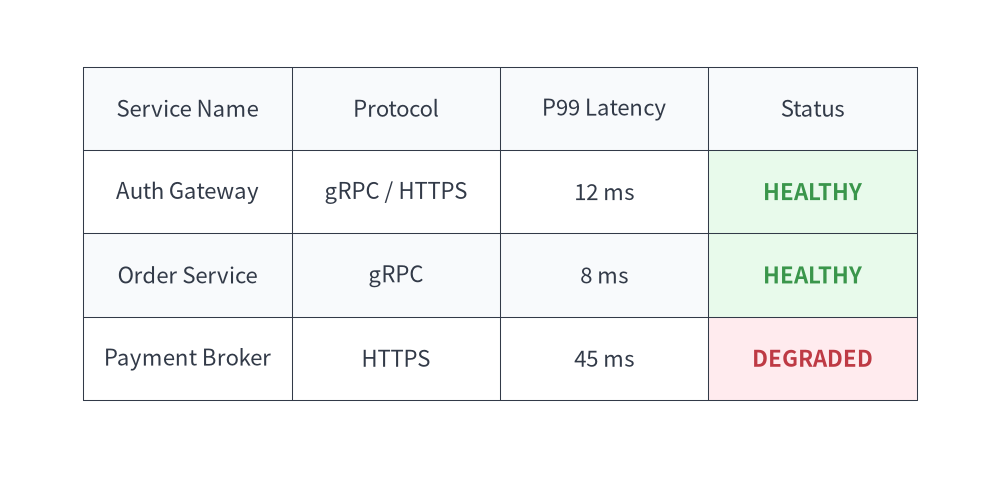
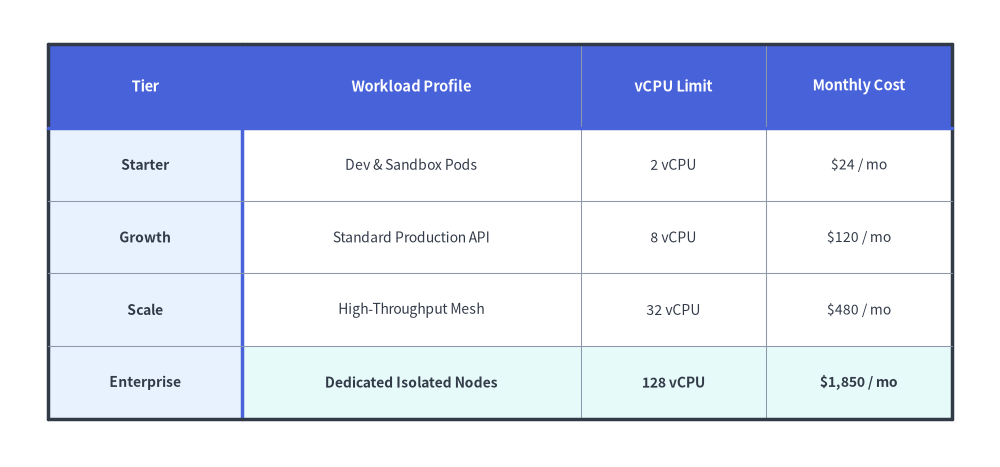

Table Component
The Table component renders 2D tabular data, comparison matrices, and database schemas.
It provides fine-grained styling control over borders, headers, alternating even/odd row backgrounds, and specific cell highlights.

Source Code
from drawlib.canvas import save, setup
from drawlib.smartarts import Table
from drawlib.styles import Colors, Styles
setup(width=130, height=46)
t = Table(
cell_style=Styles.White,
text_style=Styles.Dark.patch(text_size=10.0),
header_cell_style=Styles.PrimaryFlat,
header_text_style=Styles.WhiteBold.patch(text_size=10.5),
border_style=Styles.MutedThin,
has_header=True,
)
t.set_style_cell_evenodd(
even_color=Colors.Muted1,
even_text_style=Styles.Dark.patch(text_size=10.0),
odd_color=Colors.White,
odd_text_style=Styles.Dark.patch(text_size=10.0),
)
t.set_style_cell_rowheader(
background_color=Colors.Primary1,
text_style=Styles.DarkBold.patch(text_size=10.0, halign="left"),
)
t.set_style_cell_header(
background_color=Colors.Primary,
text_style=Styles.WhiteBold.patch(text_size=10.5),
)
t.set_style_cell(
background_color=Colors.Success1,
text_style=Styles.SuccessBold.patch(text_size=10.0),
rows=[1, 2],
columns=[4],
)
t.set_style_cell(
background_color=Colors.Secondary1,
text_style=Styles.DarkBold.patch(text_size=10.0),
rows=[3],
columns=[4],
)
t.set_style_border(
top=Styles.DarkBold,
top2=Styles.PrimaryBold,
bottom=Styles.DarkBold,
left=Styles.DarkBold,
left2=Styles.PrimaryBold,
right=Styles.DarkBold,
between_columns=Styles.MutedThin,
between_rows=Styles.MutedThin,
)
data = [
["Region", "Primary Endpoint", "Replication Mode", "P99 Latency", "SLA Status"],
["us-east-1", "api.use1.internal", "Sync Multi-AZ", "9.4 ms", "ACTIVE"],
["eu-central-1", "api.euc1.internal", "Sync Multi-AZ", "11.2 ms", "ACTIVE"],
["ap-northeast-1", "api.apne1.internal", "Async Read Pool", "18.5 ms", "STANDBY"],
]
t.draw_flexible(
xy=(6, 40.5),
column_widths=[24.0, 32.0, 26.0, 18.0, 18.0],
row_heights=[9.5, 8.5, 8.5, 8.5],
data=data,
)
save()
1. Quick Example: Service SLA & Status Matrix
from drawlib.canvas import setup
from drawlib.smartarts import Table
from drawlib.styles import Colors, Styles
setup(width=118, height=50)
table = Table(
cell_style=Styles.White,
text_style=Styles.Dark.patch(text_size=10.5),
header_cell_style=Styles.PrimaryFlat,
header_text_style=Styles.WhiteBold.patch(text_size=11.0),
border_style=Styles.DarkThin,
)
# Custom even/odd row styling using semantic tokens
table.set_style_cell_evenodd(
even_color=Colors.Muted1,
even_text_style=Styles.Dark.patch(text_size=10.5),
odd_color=Colors.White,
odd_text_style=Styles.Dark.patch(text_size=10.5),
)
table.set_style_cell_header(
background_color=Colors.Primary,
text_style=Styles.WhiteBold.patch(text_size=11.0),
)
# SLA highlight on HEALTHY rows using Success tint
table.set_style_cell(
background_color=Colors.Success1,
text_style=Styles.SuccessBold.patch(text_size=10.5),
rows=[1, 2],
columns=[3],
)
# SLA highlight on DEGRADED row using Danger tint
table.set_style_cell(
background_color=Colors.Danger1,
text_style=Styles.DangerBold.patch(text_size=10.5),
rows=[3],
columns=[3],
)
data = [
["Service Name", "Protocol", "P99 Latency", "Status"],
["Auth Gateway", "gRPC / HTTPS", "12 ms", "HEALTHY"],
["Order Service", "gRPC", "8 ms", "HEALTHY"],
["Payment Broker", "HTTPS", "45 ms", "DEGRADED"],
]
table.draw(xy=(6, 45), width=106, height=40, data=data)

2. Flexible Column/Row Sizing, Row Headers & Custom Borders (draw_flexible)
When columns have different content lengths (such as a wide description column next to compact numeric metrics), use table.draw_flexible(xy, column_widths=[...], row_heights=[...], data=...). You can style both the top header row and left row-header column simultaneously with set_style_cell_headers(...) (or independently with set_style_cell_rowheader(...)), customize per-column text styles (set_style_cell(..., columns=[...], text_style=Styles.Dark.patch(halign="left"|"right"))), and place accented divider lines after row 0 (top2) and column 0 (left2) via set_style_border(...).
from drawlib.canvas import save, setup
from drawlib.smartarts import Table
from drawlib.styles import Colors, Styles
setup(width=124, height=58)
table = Table(
cell_style=Styles.White,
text_style=Styles.Dark.patch(text_size=10.0),
header_cell_style=Styles.PrimaryFlat,
header_text_style=Styles.WhiteBold.patch(text_size=10.5),
border_style=Styles.MutedThin,
has_header=True,
)
# Zebra-stripe data rows first
table.set_style_cell_evenodd(
even_color=Colors.Muted1,
even_text_style=Styles.Dark.patch(text_size=10.0),
odd_color=Colors.White,
odd_text_style=Styles.Dark.patch(text_size=10.0),
)
# Left-aligned workload profile column and right-aligned numeric columns
table.set_style_cell(
background_color=Colors.White,
text_style=Styles.Dark.patch(text_size=10.0, halign="left"),
rows=[1, 2, 3],
columns=[1],
)
table.set_style_cell(
background_color=Colors.White,
text_style=Styles.Dark.patch(text_size=10.0, halign="right"),
rows=[1, 2, 3],
columns=[2, 3],
)
# Highlight the Enterprise row with right-aligned numeric metrics
table.set_style_cell(
background_color=Colors.Secondary1,
text_style=Styles.DarkBold.patch(text_size=10.0, halign="left"),
rows=[4],
columns=[1],
)
table.set_style_cell(
background_color=Colors.Secondary1,
text_style=Styles.DarkBold.patch(text_size=10.0, halign="right"),
rows=[4],
columns=[2, 3],
)
# Style both row 0 and column 0 headers, then refine row-header column 0 and top header row 0
table.set_style_cell_headers(
background_color=Colors.Primary1,
text_style=Styles.DarkBold.patch(text_size=10.0),
)
table.set_style_cell_rowheader(
background_color=Colors.Primary1,
text_style=Styles.DarkBold.patch(text_size=10.0, halign="left"),
)
table.set_style_cell_header(
background_color=Colors.Primary,
text_style=Styles.WhiteBold.patch(text_size=10.5),
)
# Emphasize outer perimeter plus header dividers (top2 beneath row 0, left2 right of column 0)
table.set_style_border(
top=Styles.DarkBold,
top2=Styles.PrimaryBold,
bottom=Styles.DarkBold,
left=Styles.DarkBold,
left2=Styles.PrimaryBold,
right=Styles.DarkBold,
between_columns=Styles.MutedThin,
between_rows=Styles.MutedThin,
)
quota_data = [
["Tier", "Workload Profile", "vCPU Limit", "Monthly Cost"],
["Starter", "Dev & Sandbox Pods", "2 vCPU", "$24 / mo"],
["Growth", "Standard Production API", "8 vCPU", "$120 / mo"],
["Scale", "High-Throughput Mesh", "32 vCPU", "$480 / mo"],
["Enterprise", "Dedicated Isolated Nodes", "128 vCPU", "$1,850 / mo"],
]
table.draw_flexible(
xy=(6, 52.5),
column_widths=[24.0, 42.0, 23.0, 23.0],
row_heights=[10.5, 9.0, 9.0, 9.0, 9.0],
data=quota_data,
)
save()

3. Geometry, Data Matrix & Coordinate Mechanics
- Top-Left Anchor
(x, y): The coordinate passed todraw(xy=...)ordraw_flexible(xy=...)specifies the top-left corner of the first table cell (row=0, col=0). - Downward & Rightward Flow: Rows step downward (
y - row_height), while columns step rightward (x + col_width). - 2D Data Matrix (
data): Passed aslist[list[Any]](all cell values are converted withstr(...)). Whenhas_header=True(default), row0is automatically styled usingheader_cell_styleandheader_text_style. - Order-Dependent Style Layering: Cell styling calls (
set_style_cell_evenodd,set_style_cell_headers,set_style_cell_rowheader,set_style_cell_header,set_style_cell) are recorded in order and applied sequentially atdraw()time. Call broad rules (such asset_style_cell_evenodd) first, and specific row/column overrides afterward.
4. API Reference
Constructor (Table)
Table(
*,
cell_style: Style,
text_style: Style,
header_cell_style: Style,
header_text_style: Style,
border_style: Style,
has_header: bool = True,
)
| Parameter | Type | Default | Description |
|---|---|---|---|
cell_style |
Style |
(Required) | Default cell style (uses shape_fill_color for cell background). |
text_style |
Style |
(Required) | Default text style for data cell contents. |
header_cell_style |
Style |
(Required) | Default cell style for the header row (row 0). |
header_text_style |
Style |
(Required) | Default text style for the header row (row 0). |
border_style |
Style |
(Required) | Default line style applied to table borders and grid lines. |
has_header |
bool |
True |
Whether row 0 is automatically styled as a header row on initialization. |
Cell & Text Styling Methods
set_style_cell_headers(background_color: ColorType, text_style: Style) -> None: Appliesbackground_colorandtext_styleto both the column header row (row 0) and the row header column (column 0).set_style_cell_header(background_color: ColorType, text_style: Style) -> None: Appliesbackground_colorandtext_styleexclusively to the top column header row (row 0).set_style_cell_rowheader(background_color: ColorType, text_style: Style) -> None: Appliesbackground_colorandtext_styleexclusively to the left row header column (column 0).set_style_cell_evenodd(even_color: ColorType, even_text_style: Style, odd_color: ColorType, odd_text_style: Style) -> None: Applies alternating zebra-stripe background colors and text styles to even (0, 2, 4, ...) and odd (1, 3, 5, ...) row indices.set_style_cell(background_color: ColorType, text_style: Style, rows: list[int] | None = None, columns: list[int] | None = None) -> None: Appliesbackground_colorandtext_styleto the intersection of 0-indexedrowsandcolumns(Nonetargets all rows or all columns). Use this to customize per-column or per-cell typography and alignment (text_style=Styles.Dark.patch(halign="left"|"right")).reset_styles() -> None: Clears all custom cell and border style overrides and restores the initial constructor styles.
Border Styling Method
table.set_style_border(
top: Style | None = None,
top2: Style | None = None,
bottom: Style | None = None,
left: Style | None = None,
left2: Style | None = None,
right: Style | None = None,
between_columns: Style | None = None,
between_rows: Style | None = None,
) -> None
| Parameter | Type | Default | Description |
|---|---|---|---|
top, bottom, left, right |
Style | None |
None |
Outer perimeter border line styles. |
top2 |
Style | None |
None |
Horizontal divider line directly beneath the header row (between row 0 and row 1). |
left2 |
Style | None |
None |
Vertical divider line directly to the right of the row-header column (between column 0 and column 1). |
between_columns |
Style | None |
None |
Vertical separator lines between inner columns. |
between_rows |
Style | None |
None |
Horizontal separator lines between inner rows. |
Drawing Methods (draw & draw_flexible)
draw(xy: tuple[float, float], width: float, height: float, data: list[list[Any]], scale: float = 1.0) -> None: Renders the table anchored at top-leftxywith uniform column widths (width / num_cols) and uniform row heights (height / num_rows), scaled proportionally byscale.draw_flexible(xy: tuple[float, float], column_widths: list[float], row_heights: list[float], data: list[list[Any]], scale: float = 1.0) -> None: Renders the table anchored at top-leftxyusing explicit per-column widths (len(column_widths) == len(data[0])) and per-row heights (len(row_heights) == len(data)), scaled proportionally byscale.